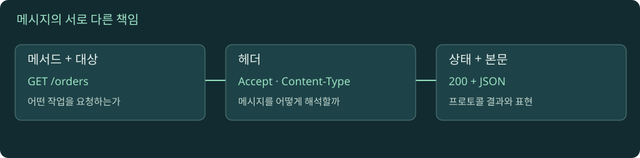

HTTP: 요청과 응답의 계약
메서드와 상태 코드는 업무의 의미를 전달한다. 메시지가 도착했다는 사실과 업무가 완료됐다는 사실을 나눠 본다.

HTTP 메시지 해부
자바스크립트를 켜면 실험을 조작할 수 있습니다. 아래 본문·도식·실습은 그대로 읽을 수 있습니다.
01. 01 · HTTP 메시지에서 의도와 표현을 분리하기
HTTP 요청은 대상과 동작 의도, 부가 조건, 필요하면 본문을 전달한다. 응답은 상태와 메타데이터, 필요하면 표현 데이터를 돌려준다. 'JSON을 주고받는 프로토콜'로만 이해하면 HTML, 이미지, 부분 다운로드, 본문 없는 응답을 설명하기 어렵다. JSON은 HTTP가 운반할 수 있는 표현 형식 중 하나다.
교육용 HTTP/1.1 요청을 읽어 보자.
GET /orders/42 HTTP/1.1
Host: api.example.test
Accept: application/json
GET은 메서드, /orders/42는 요청 대상, Host는 대상 호스트 정보다. 헤더와 본문 사이 빈 줄은 HTTP/1.1의 구문 경계다. 같은 의미라도 HTTP/2와 HTTP/3에서는 이 문자열을 그대로 전선에 쓰는 것이 아니라 프레임으로 인코딩한다. 개발자 도구가 읽기 편하게 재구성한 표시와 실제 바이트 형식은 구분한다.
설명용 응답 200과 Content-Type: application/json, {"id":42}를 보면 각각 결과 분류, 표현의 타입, 실제 표현이라는 세 요소가 보인다. 상태 코드만으로 본문의 필드 계약을 알 수 없고 JSON 본문만으로 HTTP 캐시 정책을 알 수도 없다.
02. 02 · stateless는 서버에 데이터가 없다는 뜻이 아니다
HTTP가 stateless라고 해서 서버가 로그인 정보나 주문 데이터를 저장하지 못하는 것은 아니다. 요청을 해석할 때 프로토콜이 이전 요청의 숨은 대화 상태에 의존하도록 강제하지 않는다는 뜻에 가깝다. 로그인 세션 ID를 쿠키로 보내거나 토큰을 명시해 애플리케이션이 사용자 상태와 연결할 수 있다.
교육용 예를 보자. 첫 요청에서 로그인한 사용자가 두 번째 요청에서 세션 쿠키를 보낸다. 서버는 쿠키의 식별자로 저장소의 세션을 찾는다. 세션이 있는 것은 애플리케이션 설계이고, 두 번째 요청이 어떤 자격 증명을 제공했는지를 네트워크에서 따로 볼 수 있는 것은 HTTP 요청 구조다. 'TCP 연결이 같으니 같은 사용자'라는 전제는 프록시와 연결 풀 환경에서 위험하다.
네트워크 연결 수명, 사용자 로그인 수명, 업무 트랜잭션 수명은 서로 다르다. 하나의 연결에 여러 요청이 오고 한 사용자의 요청이 여러 연결을 사용할 수 있다. 따라서 로그에서도 연결 식별자만으로 주문 하나의 전체 처리를 추적하기보다 요청 ID와 업무 ID를 함께 사용해야 한다. 이는 프로토콜의 무상태성과 애플리케이션 상태를 나누어 보는 실무적 결과다.
03. 03 · safe와 idempotent는 다른 성질
안전한 메서드는 요청자가 서버 상태 변경을 의도하지 않는 의미를 갖는다. GET과 HEAD가 대표적이다. 접근 로그나 조회 통계처럼 부수 효과가 전혀 없다는 보장은 아니다. GET으로 '주문 취소'를 구현하면 링크 미리 읽기나 자동 재시도도 주문을 취소할 수 있어 메서드 의미와 충돌한다.
멱등성은 동일한 요청을 여러 번 보냈을 때 의도한 서버 효과가 한 번 보낸 것과 같다는 성질이다. PUT과 DELETE, 안전한 메서드가 표준 의미상 멱등이다. 첫 DELETE가 204, 두 번째 DELETE가 404여도 최종적으로 대상이 없다는 의도 효과가 같을 수 있다. 멱등을 '응답이 항상 똑같음'으로 외우지 않는다. RFC 9110의 공통 메서드 속성을 참고한다.
POST와 PATCH는 일반적으로 멱등이 보장되지 않는다. 다만 애플리케이션이 중복 방지 키와 저장 규칙으로 특정 POST의 효과를 멱등하게 설계할 수 있다. 이것은 메서드 이름만 바꿔서 얻는 보장이 아니다. 키의 범위, 보관 기간, 동일 키에 다른 본문을 보냈을 때의 처리, 처리 중 중복 요청의 동작까지 서버 계약으로 정해야 한다.
04. 04 · timeout 뒤 재시도하면 주문이 두 번 생길 수 있다
직접 만든 사건을 시간순으로 보자. 클라이언트가 주문 생성 POST를 보낸다. 서버는 DB에 주문을 저장한다. 응답이 돌아오는 중 연결이 끊겨 클라이언트는 timeout을 본다. 클라이언트가 같은 POST를 다시 보내면 서버가 두 번째 주문을 생성할 수 있다. 응답을 못 받았다는 사실은 서버가 실행하지 않았다는 증거가 아니다.
재시도 판단에는 실패가 어디서 발생했는지와 요청의 의미가 필요하다. DNS 조회조차 실패해 아직 서버로 요청을 보내지 않은 경우와 응답 대기 중 끊어진 경우는 불확실성이 다르다. 프록시도 재시도할 수 있으므로 애플리케이션의 재시도 횟수만 세면 실제 시도 수를 놓칠 수 있다. 모든 계층이 독립적으로 세 번 재시도하면 시도 수가 곱으로 늘어날 수 있다.
학습용 중복 방지 계약을 설계해 보자. 고객 7번의 생성 요청 키 K를 저장하고 처리 결과 주문 42를 연결한다. 같은 고객·같은 키·같은 입력이 다시 오면 기존 결과를 반환한다. 동일 키로 다른 입력이 오면 명시적으로 충돌을 처리한다. 재시도는 지수 백오프와 분산 지연을 검토하되 사용자 요청의 전체 시간 예산을 넘기지 않아야 한다. 'POST도 재시도 가능'이라는 문장에는 이런 서버 계약이 따라야 한다.
05. 05 · 상태 코드는 요청을 처리한 계층의 결과다
2xx는 성공 범주, 3xx는 리다이렉트·조건부 처리 관련 범주, 4xx는 요청 측 문제 범주, 5xx는 서버 측 실패 범주다. 그러나 코드만으로 정확한 원인을 하나로 확정하지는 못한다. 502는 게이트웨이가 상류에서 유효한 응답을 받지 못한 상황이며, 504는 상류 응답 대기 시간 초과다. 원인이 DB인지 연결인지 서버 종료인지는 로그가 필요하다.
201은 새 리소스 생성, 202는 처리가 수락됐지만 완료되지 않았음을 표현한다. 비동기 API가 202를 반환한 것을 작업 성공으로 보고하면 안 된다. 204는 응답 콘텐츠 없이 성공을 나타내고, 304는 조건부 요청에서 저장된 표현을 재사용하도록 하는 응답으로 새 전체 본문을 주는 200과 다르다. MDN 상태 코드 설명을 참고한다.
또한 요청은 애플리케이션에 도착하기 전에 CDN이나 로드밸런서에서 끝날 수 있다. 같은 503도 누가 생성했는지에 따라 조사가 달라진다. 응답 헤더·요청 ID·프록시 로그·상류 로그를 연결해 생성 주체를 찾자. HTTP 200 안에 업무 오류를 넣는 API도 있으므로 'HTTP 성공률'과 '업무 완료율'을 별도 지표로 정의해야 한다.
06. 06 · 리다이렉트는 새 요청을 만든다
응답의 Location은 클라이언트가 다음 대상을 알게 한다. 리다이렉트가 일어나면 DNS·연결·TLS·쿠키 판단이 새 대상 기준으로 다시 필요할 수 있다. 개발자 도구에서 마지막 200만 보면 중간의 이동과 지연을 놓친다. HTTP에서 HTTPS로, 다시 로그인 페이지로 이동하는 여러 단계를 각각 요청으로 읽자.
301·302는 기존 사용자 에이전트 동작 때문에 POST를 GET으로 바꾸는 경우를 허용하며, 303은 다른 리소스를 조회하도록 유도하는 의미를 갖는다. 307·308은 메서드를 보존하는 리다이렉트다. '모든 3xx는 같은 재요청'으로 처리하면 업로드나 주문 생성에서 결과가 달라질 수 있다. 304는 이 일반적 URL 이동과 별개인 조건부 응답이다.
직접 비교하자. 업로드 POST를 다른 URL로 옮기면서 본문을 유지해야 한다면 메서드 보존 여부를 확인해야 한다. 결제 완료 후 결과 화면을 GET으로 보여주려는 흐름에서는 다른 선택이 맞을 수 있다. 서버가 코드를 고를 때는 영구·임시 여부만이 아니라 다음 요청의 메서드와 본문이 어떻게 처리될지도 함께 결정한다. 도구의 자동 이동 옵션을 켜기 전에 첫 응답부터 읽는 습관이 필요하다.
07. 07 · 본문의 끝을 아는 방법: HTTP/1.1 framing
연결을 재사용하려면 수신자가 한 메시지의 끝과 다음 메시지의 시작을 구분해야 한다. HTTP/1.1은 메시지 종류와 헤더에 따른 framing 규칙을 사용한다. Content-Length는 본문의 옥텟 수를 나타내며 한글 글자 수와 같지 않다. Transfer-Encoding의 chunked는 조각의 크기와 종료 표시를 사용한다. 규칙은 RFC 9112의 메시지 본문 처리에 정의된다.
HEAD 응답처럼 본문을 보내지 않는 경우와 204·304의 제약도 알아야 한다. 화면에서 JSON 문자열을 봤다는 이유로 모든 응답이 Content-Length를 갖는다고 가정하지 않는다. HTTP/2·3은 별도 프레임 경계를 사용하므로 HTTP/1.1의 chunked 문법을 그대로 적용하지 않는다. 애플리케이션 스트리밍의 조각 경계와 TCP 패킷 경계도 같지 않다.
중계자마다 길이를 다르게 해석하면 한 요청의 일부를 다음 요청으로 오인하는 문제가 생길 수 있다. 교육에서 직접 공격 패킷을 만드는 대신, 프록시와 서버의 구문 해석 일관성이 왜 중요한지 이해하자. 구현자는 검증된 HTTP 라이브러리를 사용하고 모호한 길이 헤더를 임의로 허용하지 않아야 한다. 업무 JSON 파서가 맞다고 HTTP 메시지 경계까지 안전한 것은 아니다.
08. 08 · 헤더는 표현·조건·정책을 서로 다른 방식으로 제어한다
Content-Type은 본문의 표현 형식, Content-Encoding은 표현에 적용된 압축 같은 인코딩, Accept는 클라이언트가 받을 수 있는 표현에 대한 선호다. gzip으로 압축된 JSON은 JSON 타입과 gzip 인코딩을 동시에 가질 수 있다. 인코딩을 해제한 뒤의 바이트와 전송한 바이트 길이도 다르다.
요청의 If-None-Match는 캐시 검증 조건을, Authorization은 자격 증명을, Origin은 브라우저의 출처 맥락을 담을 수 있다. 헤더 이름을 전부 외우기보다 '누가 생성하고 누가 소비하는가'를 묻자. 프록시가 바꾸는 헤더도 있고 브라우저 스크립트가 임의로 설정할 수 없는 헤더도 있다.
HTTP/2는 여러 스트림을 한 연결에 실어 보내고 HTTP/3은 QUIC 위에서 HTTP 의미를 전달한다. HTTP/2 규격과 HTTP/3 규격을 읽을 때도 메서드·상태·표현 의미와 전송 형식을 나누어 보자. 버전이 바뀌었다고 GET이 주문 생성 메서드가 되거나 인증 실패의 의미가 사라지는 것은 아니다.
실습 · 첫 응답, 최종 응답, 실제 요청 메서드 구분하기
재현 가능한 로컬 관찰부터 시작하려면 교재 폴더에서 python3 tools/lab_server.py를 실행한다. 다른 터미널의 curl -i http://127.0.0.1:8765/inspect는 요청 정보를 JSON으로 돌려준다. curl -i -H 'Content-Type: application/json' --data '{"study":true}' http://127.0.0.1:8765/inspect로 POST와 본문을 확인한다. 이 서버는 교육용이며 실제 주문을 만들지 않는다. curl -i http://127.0.0.1:8765/redirect와 curl -i -L http://127.0.0.1:8765/redirect를 비교하면 302를 직접 관찰한 경우와 이동을 따른 경우가 나뉜다. 마치면 서버 터미널에서 Ctrl+C로 종료한다.
macOS 또는 Linux에서 curl을 사용한다. 공개 사이트는 설정이 바뀔 수 있으므로 상태 코드와 헤더의 실제 관찰값을 기록한다. 아래 HTTP/1.1 출력은 학습용 구문 관찰이며 HTTPS 내용을 해독하는 패킷 캡처는 아니다.
curl --http1.1 -v https://example.com/ -o /dev/null을 실행한다. >는 보낸 헤더, <는 받은 헤더를 나타낸다. 출력에 실제 협상 버전과 상태가 무엇인지 읽는다. -v에는 TLS 정보도 섞인다.curl -I https://example.com/을 실행한다. -I는 HEAD 요청을 한다. GET의 본문을 숨기는 -o /dev/null과 같은 동작이 아니다. 서버가 HEAD와 GET을 다르게 구현했을 가능성도 기억한다.curl -sS -D - -o /dev/null http://example.com/으로 첫 응답을 본다. 리다이렉트가 있으면 Location과 상태를 기록한다. 반드시 리다이렉트한다고 미리 정답을 정하지 않는다.curl -sS -L -D - -o /dev/null http://example.com/으로 자동 이동을 허용한다. 여러 헤더 블록이 나오면 각 요청의 결과를 시간순으로 구분한다. -L은 이동 정책을 바꾼 관찰이다.- 교육용 요청 POST /orders를 종이에 그린다. 서버 저장 완료 뒤 응답 유실을 표시한다. 클라이언트가 아는 사실과 서버만 아는 사실을 두 열로 나눈다. '클라이언트 timeout'만으로 주문 미생성을 단정할 수 없는 이유를 적는다.
- 동일 키 K로 요청이 두 번 도착한 경우를 설계한다. 중복 요청을 어떻게 식별하고 기존 결과를 언제 돌려줄지 적는다. 이것은 실제 example.com에 생성 요청을 보내는 실습이 아니다.
- 장 끝 퀴즈를 풀고 202·204·304·502·504를 한 문장씩 설명한다. 특히 202와 업무 완료를 구분하면 통과다.
curl 옵션의 정확한 의미는 curl 공식 매뉴얼을 참고한다. 공개 대상에 변경 요청이나 부하를 주지 않고 읽기 요청만 관찰한다.
로컬 실습 서버 실행과 공통 명령은 실습 안내에서 확인하세요. 실제 HTTPS·HTTP/2·HTTP/3 서버를 제공하는 실습은 아닙니다.
이해도 확인
선택 후 이유를 설명하고 정답을 확인하세요.
원전과 더 읽을 자료
표준과 공식 문서를 참고해 독립적으로 구성한 학습 설명입니다. 예시 결과와 시간은 명시한 경우를 제외하면 교육용입니다. 확인 기준: 2026-11-09.
진행률은 현재 브라우저에 저장됩니다. 파일 직접 열기와 HTTP 접속은 저장 공간이 다를 수 있습니다.